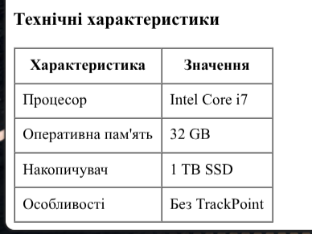
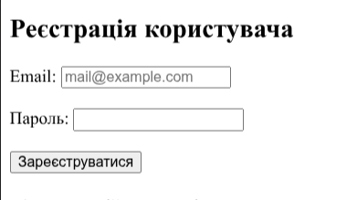
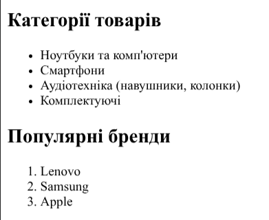

Звіт з Лабораторної роботи №1
Тема, Мета, Місце розташування
Тема: ТЕГИ ТА АТРИБУТИ HTML-ДОКУМЕНТА. СТРУКТУРНА РОЗМІТКА. GIT.GITHUB. РОБОТА З РЕПОЗИТОРІЯМИ.
Мета: Придбати практичні навички роботи з GitHub, репозиторіями, HTML-документом, таблицями, зображеннями, посиланнями, списками, формами.
Опис предметного середовища. Опис бізнес-логіки
Дані винесені на окрему сторінку logic.html у головному застосунку. Застосунок є інтернет-магазином електроніки TechStore, що дозволяє переглядати каталог товарів, їх технічні характеристики та здійснювати реєстрацію користувачів.
Структура документа
Головна сторінка WEB-застосунку містить семантичну структуру HTML5 (теги <header>, <main>, <footer>). Використано теги заголовків <h1>-<h2>, форму реєстрації <form>, списки <ul>, <ol>, таблицю характеристик <table> та зображення товару <img>.
HTML-код ТАБЛИЦІ

<table border="1" cellpadding="8" cellspacing="0">
<tr>
<th>Характеристика</th>
<th>Значення</th>
</tr>
<tr>
<td>Процесор</td>
<td>Intel Core i7</td>
</tr>
</table>Теорія:
Тег <table> є контейнером для таблиці. <tr> створює рядок, <th> визначає заголовок стовпця (текст у ньому жирний та вирівняний по центру), а <td> використовується для звичайних комірок з даними.
HTML-код ЗОБРАЖЕННЯ
<img src="img/noute.jpg" alt="Фото Lenovo ThinkBook 14" width="300">Теорія:
Тег <img> не потребує закриваючого тегу. Атрибут src вказує шлях до файлу, alt містить альтернативний текст (якщо зображення не завантажиться), а width та height задають розміри.
HTML-код ФОРМИ

<form action="#" method="POST">
<label for="email">Email:</label>
<input type="email" id="email" name="email" required>
<button type="submit">Зареєструватися</button>
</form>HTML-код СПИСКІВ

<ul>
<li>Ноутбуки та комп'ютери</li>
</ul>Теорія:
Тег <ul> створює маркірований список, а <ol> — нумерований. Елементи обох типів списків створюються за допомогою тегу <li>.
Висновки
Під час виконання лабораторної роботи було набуто практичних навичок створення базової семантичної структури HTML-документа, роботи з тегами таблиць, списків, форм та зображень. Було успішно налаштовано середовище розробки, створено локальні та віддалені репозиторії на базі Git/GitHub, а також налаштовано хостинг статичних сторінок за допомогою GitHub Pages.